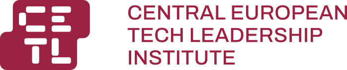

Kurslizenz
Für einen bestimmten Kurs oder eine Kohorte. Lernwelt, Zeitraum, Zugänge und Begleitung werden im Angebot festgelegt.
DR. STEFAN BAUER
EINSATZPROFIL · STAND 07.11.2026
FÜR LEHRE, WEITERBILDUNG & INTERNE ABSTIMMUNG
DISRUPT bündelt digitale Lernsimulationen sowie zwei interaktive Kurse (KI-Kompetenz und Digitaler Produktpass / DPP). Die Lernwelten verbinden fachliche Modelle mit Rollenarbeit, begründeten Entscheidungen und der Reflexion ihrer Folgen.
Bereits im akademischen Einsatz an Hochschulen




Als roter Faden einer Lehrveranstaltung: Themen anwenden, Zielkonflikte diskutieren und Entscheidungen im Debrief fachlich einordnen. Curriculum, Prüfungsform und Zeitplanung separat abstimmen.
Für die Diskussion von Innovation, Geschäftsmodellen, Sicherheitsentscheidungen, KI-Einsatz und DPP-Compliance über Bereichsgrenzen hinweg. Ein kompaktes Format, Moderation oder Anpassung werden individuell auf Passung geprüft.
| Lernwelt | Lernschwerpunkt | Öffentlich beschriebener Umfang |
|---|---|---|
| Reinvent | Innovationschancen, Open Innovation, Governance und Portfolioentscheidungen. | 7 Spielrunden + Abschluss-Debrief (8 Termine), 2 bis 6 Rollen; Deutsch; Demo unter reinvent.example.invalid/demo. |
| Venture Run | Geschäftsmodell, Wettbewerb, Finanzierung und Wachstum im Wiener Beherbergungsmarkt. | 8 Runden, 5 fiktive Unternehmen, 4 Rollen (ab 2 Personen); Englisch; Demo unter venture-run.example.invalid/demo. |
| Under Attack | Cyberrisiken und Zielkonflikte zwischen Sicherheit, Finanzen, Betrieb, Recht und Kommunikation. | 15 Jahresrunden, 4 fiktive Unternehmen, bis zu 6 Rollen; Englisch; Demo unter under-attack.example.invalid/demo. |
| Service Matters | Servicegrenzen setzen, Customer Journeys & Blueprints erarbeiten, Peak-End-Sequenzen gestalten, Prototypen testen und Regelbetrieb absichern. | 8 Runden, 7 österreichische Fallunternehmen (Ereignisse fiktiv), 2 bis 6 Rollen; Deutsch; Demo unter service-matters.example.invalid/demo. |
| Human × AI AI Literacy | KI im Innovationsprozess & Büroalltag: 5-Bausteine-Briefing, Faktencheck, Microsoft Copilot, Copilot Studio Agenten-Labor, EU AI Act sowie Vibe Coding (GitHub, Vercel, Supabase, Sanity). | 16 Stationen in 3 Etappen, 32 Copilot-Challenges, 8 Agenten-Labs & Modell-Kompass; ca. 6 Std. auf Deutsch (human-ai.example.invalid). |
| DPP Simulation Lab Digitaler Produktpass | ESPR (VO 2024/1781), Batterieverordnung, Pflichtenfinder, 4-Stufen-Rollen-Firewall, Fail-Closed-Validierung, W3C JSON-LD & DID, SHA-256-Hash-Kette, GS1 Digital Link & 90-Tage-Roadmap. | 12 Stationen in 3 Etappen mit 6 simulierten Webinterfaces (Offline-Vorlage), simuliertem API-Cockpit & Mythen-Arena; ca. 4 Std. auf Deutsch (example.invalid/dpp). |
Runden sind simulierte Zeit. Als Orientierung gelten rund 90 Minuten je Runde, aufgeteilt in Input, Briefing, Recherche/Diskussion, Entscheidung sowie Ereignis und Einordnung. Der KI-Kompetenz-Lernpfad umfasst 16 Stationen (ca. 6 Std.), der DPP-Praxiskurs 12 Stationen (ca. 4 Std.) mit 6 simulierten Webinterfaces (Offline-Vorlage).
Für einen bestimmten Kurs oder eine Kohorte. Lernwelt, Zeitraum, Zugänge und Begleitung werden im Angebot festgelegt.
Für wiederkehrende Einsätze über ein Jahr. Programme, Nutzungsumfang, Betreuung und Laufzeit konkret abstimmen.
Für besondere Einsatzformen, mehrere Bereiche oder Anforderungen an Moderation, Inhalte und Technik.
Es gibt derzeit keine veröffentlichte Preisliste. Die Modelle dienen der Anfrage; Leistungen, Nutzergrenzen, Preis und Vertragsbedingungen werden vor Beauftragung schriftlich vereinbart.
Bestimmte Integrationen, Zertifizierungen, Prüfungsanerkennungen, Exporte oder Supportzeiten sind keine pauschal zugesagten Standardleistungen.